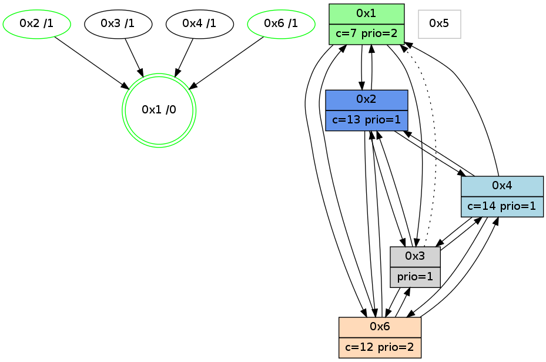

>> << IDX [start] -100 -25 -5 +0 +5 +25 +100 [985.350232124]
 Previous packets
980.001352 [Color(2) seq=173 @0:0 color=13 prio=1 c=7,c,e;1,4,6,8,9,b]
----------------------------------------------------------------------
980.429146 beacon01(adaf) #0 coord=01,02,05,03,04,06 cycle=432.0ms assoc
-- color-indic=1 64 5d 6e
980.439108 beacon02(adaf) #0 coord=01,02,05,03,04,06 cycle=432.0ms assoc 64 0c 91
980.449107 beacon05(adaf) #0 coord=01,02,05,03,04,06 cycle=432.0ms assoc 64 aa bb
980.459108 beacon03(adaf) #0 coord=01,02,05,03,04,06 cycle=432.0ms assoc 64 36 9f
980.469107 beacon04(adaf) #0 coord=01,02,05,03,04,06 cycle=432.0ms assoc 64 90 b5
980.479108 beacon06(adaf) #0 coord=01,02,05,03,04,06 cycle=432.0ms assoc 64 e4 a9
980.490620 [Hello(1): seq=686 sym=2,4,6,3 sysInfo=hasWarning,coloring-mode-on,ColoringModeRequestCalled stat=2:3,2,3,3/4:3,1,2,0/6:2,7,8,1/3:0,0,1,0]
980.493286 [Hello(6): seq=699 sym=4,2,1,3 sysInfo=hasWarning stat=4:9,10,6,1/2:2,2,1,2/1:9,15,2,1/3:15,3,9,5]
980.496243 [Hello(2): seq=1275 sym=3,6,1,4 sysInfo=hasWarning stat=3:9,11,7,3/6:4,3,7,0/1:15,11,13,0/4:4,3,2,0]
980.498073 [Color(6) seq=171 @0:0 color=12 prio=2 c=7,d,e;1,4,6,8,9,b]
----------------------------------------------------------------------
980.921256 beacon01(adaf) #0 coord=01,02,05,03,04,06 cycle=432.0ms assoc
-- color-indic=1 64 99 01
980.931220 beacon02(adaf) #0 coord=01,02,05,03,04,06 cycle=432.0ms assoc 64 c8 fe
980.941216 beacon05(adaf) #0 coord=01,02,05,03,04,06 cycle=432.0ms assoc 64 6e d4
980.951218 beacon03(adaf) #0 coord=01,02,05,03,04,06 cycle=432.0ms assoc 64 f2 f0
980.961217 beacon04(adaf) #0 coord=01,02,05,03,04,06 cycle=432.0ms assoc 64 54 da
980.971217 beacon06(adaf) #0 coord=01,02,05,03,04,06 cycle=432.0ms assoc 64 20 c6
980.985248 [STC(1) #0.139 new-neigh,tree-change,inconsistent-stability,stable,to-color d=0]
980.987529 [Color(1) seq=213 @0:0 color=7 prio=2 c=1,4,6,8,9,b,c,d;0,2,3,5,a,e]
980.989231 [Color(2) seq=174 @0:0 color=13 prio=1 c=7,c,e;1,4,6,8,9,b]
----------------------------------------------------------------------
981.413366 beacon01(adaf) #0 coord=01,02,05,03,04,06 cycle=432.0ms assoc
-- color-indic=1 64 d5 b1
981.423328 beacon02(adaf) #0 coord=01,02,05,03,04,06 cycle=432.0ms assoc 64 84 4e
981.433327 beacon05(adaf) #0 coord=01,02,05,03,04,06 cycle=432.0ms assoc 64 22 64
981.443327 beacon03(adaf) #0 coord=01,02,05,03,04,06 cycle=432.0ms assoc 64 be 40
981.453327 beacon04(adaf) #0 coord=01,02,05,03,04,06 cycle=432.0ms assoc 64 18 6a
981.463327 beacon06(adaf) #0 coord=01,02,05,03,04,06 cycle=432.0ms assoc 64 6c 76
981.474197 [Hello(1): seq=687 sym=2,4,6,3 sysInfo=hasWarning,coloring-mode-on,ColoringModeRequestCalled stat=2:3,3,3,3/4:3,1,2,0/6:3,8,8,1/3:1,0,1,0]
981.480276 [STC(4)->1 #0.139 new-neigh,tree-change,inconsistent-stability,to-color d=1]
981.482083 [STC(6)->1 #0.139 new-neigh,tree-change,inconsistent-stability,stable,to-color d=1]
981.484126 [Hello(2): seq=1276 sym=3,6,1,4 sysInfo=hasWarning stat=3:10,11,7,3/6:4,4,7,0/1:15,11,13,0/4:4,3,2,0]
981.493924 [TreeStatus(6)-.->1 #0.139 new-neigh,tree-change,inconsistent-stability,stable child=1]
981.497689 [Color(6) seq=172 @0:0 color=12 prio=2 c=7,d,e;1,4,6,8,9,b]
----------------------------------------------------------------------
981.905474 beacon01(adaf) #0 coord=01,02,05,03,04,06 cycle=432.0ms assoc
-- color-indic=1 64 11 de
981.915437 beacon02(adaf) #0 coord=01,02,05,03,04,06 cycle=432.0ms assoc 64 40 21
981.925435 beacon05(adaf) #0 coord=01,02,05,03,04,06 cycle=432.0ms assoc 64 e6 0b
981.935435 beacon03(adaf) #0 coord=01,02,05,03,04,06 cycle=432.0ms assoc 64 7a 2f
981.945436 beacon04(adaf) #0 coord=01,02,05,03,04,06 cycle=432.0ms assoc 64 dc 05
981.955436 beacon06(adaf) #0 coord=01,02,05,03,04,06 cycle=432.0ms assoc 64 a8 19
981.967146 [Hello(4): seq=788 sym=2,1,6,3 sysInfo=hasWarning stat=2:13,7,8,1/1:9,12,5,0/6:8,7,9,3/3:2,0,4,2]
981.969626 [Color(2) seq=175 @0:0 color=13 prio=1 c=7,c,e;1,4,6,8,9,b]
981.972813 [Color(1) seq=214 @0:0 color=7 prio=2 c=1,4,6,8,9,b,c,d;0,2,3,5,a,e]
----------------------------------------------------------------------
982.397581 beacon01(adaf) #0 coord=01,02,05,03,04,06 cycle=432.0ms assoc
-- color-indic=1 64 4f bf
982.417545 beacon05(adaf) #0 coord=01,02,05,03,04,06 cycle=432.0ms assoc 64 b8 6a
982.447544 beacon06(adaf) #0 coord=01,02,05,03,04,06 cycle=432.0ms assoc 64 f6 78
982.460642 [Hello(6): seq=701 sym=4,2,1,3 sysInfo=hasWarning stat=4:9,10,6,1/2:2,4,1,2/1:11,1,3,1/3:1,3,9,5]
982.463200 PARSE ERROR************************
Traceback (most recent call last):
File "PacketAnalysis.py", line 167, in showOperaPacket
structPacket = OperaPacketParse.parsePacket(rawPacket)
File "../../pkg-python/HipSens/Core/OperaPacketParse.py", line 467, in parsePacket
return parseColorMessage(data)
File "../../pkg-python/HipSens/Core/OperaPacketParse.py", line 385, in parseColorMessage
address, data = popAddress(data)
File "../../pkg-python/HipSens/Core/OperaPacketParse.py", line 41, in popAddress
return (struct.unpack("H", data[:AddressSize])[0],
error: unpack requires a string argument of length 2
43 13 00 00 00 00 a7 21 41 88 87 af ad ff ff 06 00 00 43 13 06 00 00
982.465733 [Hello(1): seq=688 sym=2,4,6,3 sysInfo=hasWarning,coloring-mode-on,ColoringModeRequestCalled stat=2:4,3,3,3/4:3,1,3,0/6:3,9,9,2/3:1,0,1,0]
----------------------------------------------------------------------
982.889690 beacon01(adaf) #0 coord=01,02,05,03,04,06 cycle=432.0ms assoc
-- color-indic=1 64 8b d0
982.899650 beacon02(adaf) #0 coord=01,02,05,03,04,06 cycle=432.0ms assoc 64 da 2f
982.909650 beacon05(adaf) #0 coord=01,02,05,03,04,06 cycle=432.0ms assoc 64 7c 05
982.919652 beacon03(adaf) #0 coord=01,02,05,03,04,06 cycle=432.0ms assoc 64 e0 21
982.929652 beacon04(adaf) #0 coord=01,02,05,03,04,06 cycle=432.0ms assoc 64 46 0b
982.939653 beacon06(adaf) #0 coord=01,02,05,03,04,06 cycle=432.0ms assoc 64 32 17
982.951343 [Hello(4): seq=789 sym=2,1,6,3 sysInfo=hasWarning stat=2:13,8,8,1/1:10,13,5,0/6:8,7,9,3/3:2,0,4,2]
982.953862 [Color(1) seq=215 @0:0 color=7 prio=2 c=1,4,6,8,9,b,c,d;0,2,3,5,a,e]
982.956805 [Hello(2): seq=1277 sym=3,6,1,4 sysInfo=hasWarning stat=3:10,11,7,3/6:4,5,7,1/1:0,12,13,0/4:4,3,2,0]
----------------------------------------------------------------------
983.381799 beacon01(adaf) #0 coord=01,02,05,03,04,06 cycle=432.0ms assoc
-- color-indic=1 64 c7 60
983.391762 beacon02(adaf) #0 coord=01,02,05,03,04,06 cycle=432.0ms assoc 64 96 9f
983.401760 beacon05(adaf) #0 coord=01,02,05,03,04,06 cycle=432.0ms assoc 64 30 b5
983.411761 beacon03(adaf) #0 coord=01,02,05,03,04,06 cycle=432.0ms assoc 64 ac 91
983.421760 beacon04(adaf) #0 coord=01,02,05,03,04,06 cycle=432.0ms assoc 64 0a bb
983.431762 beacon06(adaf) #0 coord=01,02,05,03,04,06 cycle=432.0ms assoc 64 7e a7
983.444523 [Color(2) seq=176 @0:0 color=13 prio=1 c=7,c,e;1,4,6,8,9,b]
983.448516 [Hello(6): seq=702 sym=4,2,1,3 sysInfo=hasWarning stat=4:9,10,6,1/2:3,4,1,2/1:12,2,3,1/3:2,3,9,5]
983.452279 [Color(6) seq=174 @0:0 color=12 prio=2 c=7,d,e;1,4,6,8,9,b]
983.456569 [Hello(1): seq=689 sym=2,4,6,3 sysInfo=hasWarning,coloring-mode-on,ColoringModeRequestCalled stat=2:5,3,3,3/4:3,1,3,0/6:3,9,9,2/3:1,0,1,0]
983.459716 [STC(1) #0.140 new-neigh,tree-change,inconsistent-stability,stable,to-color d=0]
----------------------------------------------------------------------
983.873908 beacon01(adaf) #0 coord=01,02,05,03,04,06 cycle=432.0ms assoc
-- color-indic=1 64 03 0f
983.883872 beacon02(adaf) #0 coord=01,02,05,03,04,06 cycle=432.0ms assoc 64 52 f0
983.893869 beacon05(adaf) #0 coord=01,02,05,03,04,06 cycle=432.0ms assoc 64 f4 da
983.903871 beacon03(adaf) #0 coord=01,02,05,03,04,06 cycle=432.0ms assoc 64 68 fe
983.913871 beacon04(adaf) #0 coord=01,02,05,03,04,06 cycle=432.0ms assoc 64 ce d4
983.923870 beacon06(adaf) #0 coord=01,02,05,03,04,06 cycle=432.0ms assoc 64 ba c8
983.935460 [STC(6)->1 #0.140 new-neigh,tree-change,inconsistent-stability,stable,to-color d=1]
983.939151 [Color(1) seq=216 @0:0 color=7 prio=2 c=1,4,6,8,9,b,c,d;0,2,3,5,a,e]
983.941185 [Hello(4): seq=790 sym=2,1,6,3 sysInfo=hasWarning stat=2:14,8,8,1/1:11,14,6,0/6:8,8,9,3/3:2,0,4,2]
983.944186 [STC(3)->1 #0.140 new-neigh,tree-change,inconsistent-stability,to-color d=1]
983.950808 [Hello(2): seq=1278 sym=3,6,1,4 sysInfo=hasWarning stat=3:10,11,7,3/6:5,6,7,1/1:1,12,14,0/4:4,3,2,0]
983.953540 [STC(4)->1 #0.140 new-neigh,tree-change,inconsistent-stability,to-color d=1]
983.958578 [STC(2)->1 #0.140 new-neigh,tree-change,inconsistent-stability,stable,to-color d=1]
----------------------------------------------------------------------
984.366015 beacon01(adaf) #0 coord=01,02,05,03,04,06 cycle=432.0ms assoc
-- color-indic=1 64 4e 08
984.375976 beacon02(adaf) #0 coord=01,02,05,03,04,06 cycle=432.0ms assoc 64 1f f7
984.385976 beacon05(adaf) #0 coord=01,02,05,03,04,06 cycle=432.0ms assoc 64 b9 dd
984.395977 beacon03(adaf) #0 coord=01,02,05,03,04,06 cycle=432.0ms assoc 64 25 f9
984.405977 beacon04(adaf) #0 coord=01,02,05,03,04,06 cycle=432.0ms assoc 64 83 d3
984.415978 beacon06(adaf) #0 coord=01,02,05,03,04,06 cycle=432.0ms assoc 64 f7 cf
984.427854 [Hello(1): seq=690 sym=2,6,3 sysInfo=hasWarning,coloring-mode-on,ColoringModeRequestCalled stat=2:6,3,4,3/6:3,9,10,2/3:2,0,2,0]
984.430391 [Hello(6): seq=703 sym=4,2,1,3 sysInfo=hasWarning stat=4:9,10,7,1/2:4,4,2,2/1:13,3,4,1/3:3,3,10,5]
984.432391 [Color(2) seq=177 @0:0 color=13 prio=1 c=7,c,e;1,4,6,8,9,b]
984.435283 [Color(6) seq=175 @0:0 color=12 prio=2 c=7,d,e;1,4,6,8,9,b]
----------------------------------------------------------------------
984.858124 beacon01(adaf) #0 coord=01,02,05,03,04,06 cycle=432.0ms assoc
-- color-indic=1 64 8a 67
984.868084 beacon02(adaf) #0 coord=01,02,05,03,04,06 cycle=432.0ms assoc 64 db 98
984.878085 beacon05(adaf) #0 coord=01,02,05,03,04,06 cycle=432.0ms assoc 64 7d b2
984.888084 beacon03(adaf) #0 coord=01,02,05,03,04,06 cycle=432.0ms assoc 64 e1 96
984.898086 beacon04(adaf) #0 coord=01,02,05,03,04,06 cycle=432.0ms assoc 64 47 bc
984.908086 beacon06(adaf) #0 coord=01,02,05,03,04,06 cycle=432.0ms assoc 64 33 a0
984.921671 [Color(1) seq=217 @0:0 color=7 prio=2 c=1,4,6,8,9,b,c,d;0,2,3,5,a,e]